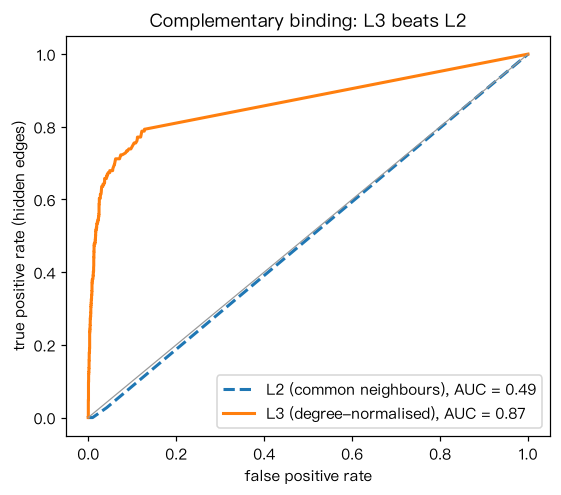
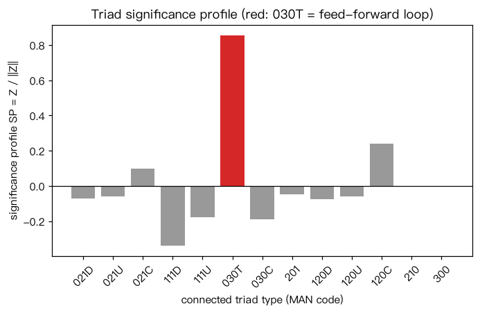
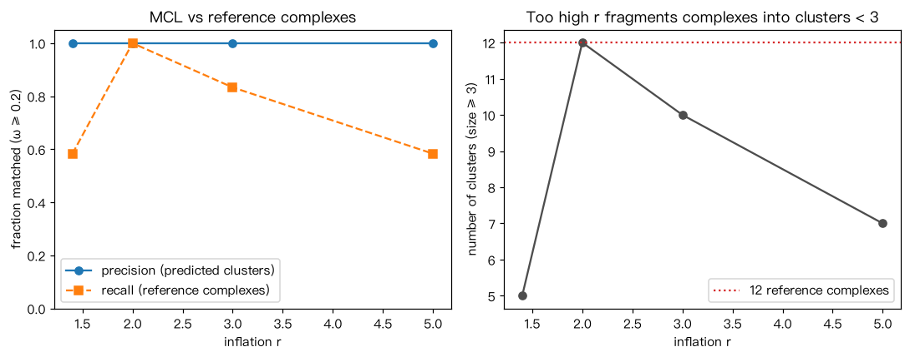

生物分子网络与拓扑特征
蛋白相互作用、转录调控、代谢与信号网络的数据来源、拓扑、枢纽与必需性、复合物、网络基序、差异网络与多组学整合
许多生物医学网络是从相关数据中估计出来的，例如脑连接组中脑区信号的相关、症状网络中症状之间的偏相关。蛋白质相互作用网络和转录调控网络则有所不同：它们的边原则上对应物理事件——两个蛋白结合在一起，或一个转录因子结合到某基因的启动子上。这让分子网络在“边的含义”上更接近复杂系统与网络的数学表示至网络可控性与稳定性中讨论的经典网络，但也带来了新问题：实验测得的网络不完整、有偏倚、有噪声；而且实际使用的“分子网络”中，相当一部分边并不是物理相互作用，而是数据库推断的功能关联或统计共表达关系。
本专题从数据到结构、再到功能与情境展开：先介绍主要的分子网络类型、三类不同含义的边及其数据来源，以及相互作用组图谱的实验方法和质量评估；再讨论整体拓扑特征（重尾度分布、小世界、模块与层次、度异配），并单独讨论代谢网络（含通量平衡分析）和信号转导网络这两类“边带有化学计量或符号”的网络；然后讨论蛋白复合物与功能模块的检测、Jeong 等（2001）提出的“致死性–中心性”关系及其争议、人类疾病网络与疾病模块；接着转到微观尺度，系统介绍各类网络基序及其动力学功能；最后讨论分子网络随条件改变的“重连”（差异网络）以及把多种组学数据整合到网络中的方法。
阅读时可以抓住一条主线：网络上的每一个结论，都依赖于“边是怎样测得的”。度分布、枢纽、模块、基序乃至疾病模块，都会随检测方法、研究偏倚和取样范围而改变；因此本专题在每个知识页面中都把数据来源与零模型放在和结论同等重要的位置。理解这些内容需要用到小世界与无标度网络模型中的度分布与网络可控性与稳定性中的鲁棒性，网络基序部分需要一点常微分方程的直觉。如何从表达数据推断调控网络，见基因调控网络推断与共表达分析；疾病模块在药物重定位中的应用，见疾病模块、网络邻近度与药物重定位。
Contents知识页面
VIDEO讲解视频
文字稿
大家好，这一期我们走进细胞内部，看看蛋白质和基因组成的网络。和脑网络、症状网络不同，这里的边原则上对应真实的物理事件。比如两个蛋白结合在一起，或者一个转录因子结合到某个基因的启动子上。
第一个问题，分子网络的数据从哪里来，可信吗。第二个问题，网络中的枢纽蛋白，是不是真的更关键。第三个问题，三五个基因组成的小基序，能完成什么样的功能。
蛋白质相互作用网络是无向的，节点是蛋白，边是物理结合。转录调控网络是有向的，从转录因子指向靶基因，还分激活和抑制。相互作用主要来自酵母双杂交和亲和纯化质谱，两者测到的边含义不同。人类互作组已整理出十几万条相互作用，但距离完整还很远。而且越热门的基因被报道的相互作用越多，这就是研究偏倚。
这是一个模拟的蛋白网络，红色的是少数连接特别多的枢纽。2001年，巴拉巴西团队在酵母中发现，度越高的蛋白越可能是必需的。度大于15的蛋白中，大约62%敲除后会致死，而低度蛋白只有约21%。删除枢纽后网络迅速碎裂，这曾被用来解释为什么枢纽更致命。但后来有学者指出，枢纽可能只是更容易包含某个必需的相互作用。也可能是因为枢纽集中在核糖体这类必需的复合物里，相关不等于机制。这个例子提醒我们，一个稳健的相关，可能对应好几种互相竞争的机制。
2007年，巴拉巴西团队又把疾病和致病基因连成一个二分网络。两个疾病共享致病基因就相连，于是得到了人类疾病网络。同类疾病聚在一起，它们的致病基因在相互作用网络中也更接近。有意思的是，大多数遗传病基因并不是枢纽，而是位于网络的外围。这启发了疾病模块假说，同一疾病的基因倾向于聚集在网络的局部区域。在网络推断和网络医学专题里，我们会在这个基础上讨论网络推断和药物重定位。
判断一个子图是不是基序，要和随机化网络比较。随机化时保持每个节点的入度和出度不变，只打乱连接对象。真实网络中的数量减去随机网络的均值，再除以标准差，就是Z分数。Z分数很大，说明这种结构的出现不能用度分布来解释。
现在把视角缩小到几个基因，看网络基序，也就是比随机网络多得多的小子图。最著名的是前馈环，X调控Y，X和Y又共同调控Z。如果Z要求X和Y同时存在，那么Z必须等Y积累起来才会开启。所以短暂的输入脉冲会被过滤掉，只有持续足够久的信号才能引起响应。这就像一个持续性检测器，帮助细胞忽略偶然的噪声。另一种常见基序是负自调控，它能加快响应、减小细胞间的波动。不过要记住，同样的结构换一组参数，功能就可能完全不同。
第一，分子网络边的含义取决于实验方法，使用数据库前要读懂证据来源。第二，重尾度分布和枢纽是稳健的，但严格的无标度要做统计检验。第三，枢纽与致死性的相关很稳健，但背后的机制仍有多种解释。第四，多数遗传病基因位于网络外围，疾病基因倾向于形成模块。第五，网络基序像电路元件，建议在代码示例里亲手模拟前馈环的滤波效果。
INTERACTIVE交互可视化
CODE计算实现
13 个完整可运行的 Python 示例，每个都给出代码、输出图和解读；可在浏览器中直接运行，或下载 Jupyter Notebook · Python 脚本。
 重尾度分布与 Jeong 式统计
重尾度分布与 Jeong 式统计 删除枢纽与随机删除对巨连通分支的影响
删除枢纽与随机删除对巨连通分支的影响 前馈环计数与保持入度/出度的随机化零模型（网络基序 Z 分数）
前馈环计数与保持入度/出度的随机化零模型（网络基序 Z 分数） 一致型 1 型前馈环（与门）的持续性检测
一致型 1 型前馈环（与门）的持续性检测 AP-MS 拉下数据的 spoke 模型与 matrix 模型
AP-MS 拉下数据的 spoke 模型与 matrix 模型
互作组补全——共同邻居（L2）与长度为 3 的路径（L3）链路预测 通量平衡分析（FBA）与反应敲除
通量平衡分析（FBA）与反应敲除 负自调控加快响应；不一致型 1 型前馈环产生脉冲并加速
负自调控加快响应；不一致型 1 型前馈环产生脉冲并加速
三节点子图普查（triad census）与显著性谱
马尔可夫聚类（MCL）检测蛋白复合物并与参考复合物匹配 度与必需性的混杂——控制复合物成员身份后度还有预测力吗？
度与必需性的混杂——控制复合物成员身份后度还有预测力吗？ 差异共表达——Fisher z 检验与置换检验
差异共表达——Fisher z 检验与置换检验 相似性网络融合（SNF）整合两类组学数据
相似性网络融合（SNF）整合两类组学数据Papers论文精读
随机网络中标度律的涌现
Emergence of scaling in random networks
Barabási A-L, Albert R
报告多个真实网络的度分布尾部近似幂律，并提出“增长 + 优先连接”模型，用平均场方法推出指数 γ=3。
蛋白质网络中的致死性与中心性
Lethality and centrality in protein networks
Jeong H, Mason SP, Barabási A-L, Oltvai ZN
在酵母蛋白质相互作用网络中发现度分布重尾，且度越高的蛋白敲除后越可能致死，提出“致死性–中心性”关系。
网络基序：复杂网络的简单构件
Network motifs: simple building blocks of complex networks
Milo R, Shen-Orr S, Itzkovitz S, Kashtan N, Chklovskii D, Alon U
把“在真实网络中出现次数显著多于随机网络的小子图”定义为网络基序，发现不同领域的网络各有特征性基序。
大肠杆菌转录调控网络中的网络基序
Network motifs in the transcriptional regulation network of Escherichia coli
Shen-Orr SS, Milo R, Mangan S, Alon U
在大肠杆菌转录调控网络中发现前馈环、单输入模块、密集重叠调控子三类富集基序。
酵母蛋白质相互作用网络中动态组织的模块性证据
Evidence for dynamically organized modularity in the yeast protein–protein interaction network
Han J-DJ, Bertin N, Hao T, Goldberg DS, Berriz GF, Zhang LV, et al.
结合共表达把酵母互作组枢纽分为 party hub 与 date hub，提出动态组织的模块性。
加权基因共表达网络分析的一般框架
A general framework for weighted gene co-expression network analysis
Zhang B, Horvath S
提出用“软阈值”把基因间相关转为连续连接权重，构建加权共表达网络，并把连接度、拓扑重叠、聚集系数推广到加权情形。
人类疾病网络
The human disease network
Goh K-I, Cusick ME, Valle D, Childs B, Vidal M, Barabási A-L
用 OMIM 疾病–基因关联构建疾病网络，发现疾病共享遗传根源、按类别聚集，多数遗传病基因位于网络外围。
网络医学：基于网络理解人类疾病
Network medicine: a network-based approach to human disease
Barabási A-L, Gulbahce N, Loscalzo J
纲领性综述：疾病很少源于单个基因，而是细胞分子网络的扰动；系统梳理网络医学的核心假设、疾病基因预测方法与疾病间关系网络。
群体智慧实现稳健的基因调控网络推断
Wisdom of crowds for robust gene network inference
Marbach D, Costello JC, Küffner R, Vega NM, Prill RJ, Camacho DM, et al.; DREAM5 Consortium
DREAM5 挑战对 35 种网络推断方法做盲评，发现没有单一方法始终最优，而整合多种方法的“社区网络”最稳健。
借助不完整的相互作用组揭示疾病之间的关系
Uncovering disease-disease relationships through the incomplete interactome
Menche J, Sharma A, Kitsak M, Ghiassian SD, Vidal M, Loscalzo J, et al.
给出不完整互作组中疾病模块可被观测的条件，提出网络分离度，用以预测疾病间的生物与临床相似性。
基于网络的药物疗效计算机筛选
Network-based in silico drug efficacy screening
Guney E, Menche J, Vidal M, Barabási A-L
提出校正度偏倚的药物–疾病网络邻近度，发现有效药物的靶点更靠近疾病基因。
癌症维持基因作为治疗靶点
Cancer-keeper genes as therapeutic targets
Zhang X, Pan C, Wei X, Yu M, Liu S, An J, et al.
提出在所有控制方案中都处于控制路径中间的控制枢纽，用作癌症维持基因，并在膀胱癌细胞和小鼠模型中检验部分候选。
共同接收者中的突触组织预测输入神经元之间的连接
Synaptic organization in shared receivers predicts connectivity between input neurons
Zhang X
在两个成年果蝇连接组中，相连输入源的突触在共同接收神经元上靠得更近，这种空间信息可帮助预测未见过的输入神经元之间的连接。
References核心文献
Barabási & Oltvai 2004：Network biology: understanding the cell’s functional organization
- 背景：酵母 PPI、代谢网络等大规模数据出现后，需要一个统一框架描述细胞内网络的组织原则。
- 核心发现：该综述（Nature Reviews Genetics，DOI: 10.1038/nrg1272）总结了分子网络的重尾度分布、小世界、层次模块化和基序等特征，提出从“单个分子”转向“网络组织”理解细胞功能。
- 阅读提示：这是网络生物学的奠基性综述，但部分结论（尤其是普遍的无标度性）在后续研究中被修正。阅读时把每个论断与分子网络的拓扑特征和致死性与中心性中的“争议”对照。
- 思考题：文中把枢纽的存在归因于“优先连接”式的演化（基因复制）。还有哪些机制可以产生重尾度分布？如何用数据区分它们？
Jeong 等 2001：Lethality and centrality in protein networks
- 背景：已知无标度网络对攻击枢纽很脆弱（见网络可控性与稳定性），作者想知道这一网络性质是否对应生物学后果。
- 核心发现：该短文（Nature，DOI: 10.1038/35075138）在酵母 PPI 中发现度越高的蛋白越可能是必需的，度大于 15 的蛋白中约 62% 必需，而度不超过 5 的蛋白中约 21% 必需。
- 阅读提示：全文只有两页，图 1c 是核心证据。读完后可读 He & Zhang（2006）的反驳，比较两者的论证逻辑。论文精读见 Jeong 2001。
- 思考题：如果有一个控制了研究偏倚的高质量 PPI 数据集和每个蛋白所属复合物的注释，应如何设计分析来区分“网络碎裂”“必需相互作用”“必需复合物”三种解释？
Alon 2007：Network motifs: theory and experimental approaches
- 背景：Milo 等（2002）定义了网络基序之后，需要回答：这些基序为什么被进化选择？它们执行什么功能？
- 核心发现：该综述（Nature Reviews Genetics，DOI: 10.1038/nrg2102）系统总结了自调控、前馈环、单输入模块等基序的动力学功能（加速、延迟、滤波、脉冲、时序控制）以及在细菌、酵母、动物中的实验证据。
- 阅读提示：重点读一致型与不一致型 FFL 的部分，并用“前馈环”交互演示复现“持续性检测”现象。相关原始论文的精读见 Milo 2002 与 Shen-Orr 2002。
- 思考题：在癌症信号通路或炎症通路中，能否找到一个前馈环或负反馈环的例子？它的动力学功能对药物给药方案（持续给药 vs 脉冲给药）有什么启示？
Jeong 等 2000：The large-scale organization of metabolic networks
- 背景：在 WWW、互联网等非生物网络中发现重尾度分布后，作者想知道细胞内的生化网络是否遵循相同的组织原则。
- 核心发现：该文（Nature，DOI: 10.1038/35036627）比较了生命三域中 43 种生物的代谢网络，报告它们尽管成分与通路差异很大，却具有相同的拓扑标度性质，并据此提出代谢网络遵循“鲁棒、容错的无标度网络”的设计原则。
- 阅读提示：与 Arita（2004）、Ma & Zeng（2003）对照阅读：货币代谢物的处理方式和图表示的选择，会显著改变度分布与平均路径长度。正文见代谢网络与通量平衡分析。
- 思考题：如果用二分图或追踪碳原子的方式重建同一个代谢网络，哪些结论会保留，哪些会改变？
Luck 等 2020：A reference map of the human binary protein interactome
- 背景：文献整理的人类 PPI 数据高度偏向研究充分的蛋白，需要一张对全部蛋白对“一视同仁”的系统性二元图谱。
- 核心发现：该文（Nature，DOI: 10.1038/s41586-020-2188-x）报告了人类“全对全”二元参考互作图谱 HuRI，含约 53000 条 PPI，约为小规模研究中高质量整理数据的 4 倍；结合基因组、转录组与蛋白质组数据推断组织特异网络，用于解释孟德尔病的组织特异表型。
- 阅读提示：重点看质量控制（正交验证、阳性/随机参考集）与组织特异网络的构建方式。正文见相互作用组图谱。
- 思考题：在 HuRI 与文献整理网络上分别计算疾病基因的平均度，你预期结果有何不同？为什么？
Vidal、Cusick & Barabási 2011：Interactome networks and human disease
- 背景：从“单个基因–单个疾病”转向把基因型–表型关系放在相互作用组背景下理解。
- 核心发现：该综述（Cell，DOI: 10.1016/j.cell.2011.02.016）系统梳理了相互作用组图谱的实验策略、质量评估、不同类型的分子网络，以及疾病作为网络扰动（包括节点删除与 edgetic 扰动）的观点。
- 阅读提示：可作为相互作用组图谱与疾病模块两页的总览阅读。
- 思考题：二元图谱与共复合物图谱分别更适合回答哪些疾病机制问题？
Orth、Thiele & Palsson 2010：What is flux balance analysis?
- 背景：基于约束的代谢建模在微生物工程与系统生物学中广泛使用，需要一份简明的入门说明。
- 核心发现：该入门文章（Nature Biotechnology，DOI: 10.1038/nbt.1614）用一个小例子讲解化学计量矩阵、稳态约束、上下界与目标函数，说明 FBA 如何用线性规划预测生长率和基因敲除效果，以及它的主要局限。
- 阅读提示：读完后用代码示例中的玩具网络复现“旁路使反应非必需”的结论（见FBA 与反应敲除）。
- 思考题：对于人类分化细胞，什么样的目标函数比“最大化生物量”更合理？如何用数据检验它？
Ideker & Krogan 2012：Differential network biology
- 背景：静态互作组把不同条件下的边叠加在一起，掩盖了细胞对刺激的响应方式。
- 核心发现：该综述（Molecular Systems Biology，DOI: 10.1038/msb.2011.99）主张在不同条件下测量并比较网络，以“改变的边”揭示条件特异的功能，讨论了差异遗传相互作用与差异物理相互作用的实验与分析策略。
- 阅读提示：与 Bandyopadhyay 等（2010）的 DNA 损伤差异上位性图谱一起读。正文见差异网络。
- 思考题：如果只有两组各 30 个样本的表达数据，你能可靠地检测哪种程度的“重连”？（参考数学推导与算法中的样本量估计。）
其他引用文献
- Uetz P 等 (2000). A comprehensive analysis of protein–protein interactions in Saccharomyces cerevisiae. Nature 403:623-627. DOI 10.1038/35001009。
- Ito T 等 (2001). A comprehensive two-hybrid analysis to explore the yeast protein interactome. Proceedings of the National Academy of Sciences 98:4569-4574. DOI 10.1073/pnas.061034498。
- Gavin AC 等 (2002). Functional organization of the yeast proteome by systematic analysis of protein complexes. Nature 415:141-147. DOI 10.1038/415141a。
- Ho Y 等 (2002). Systematic identification of protein complexes in Saccharomyces cerevisiae by mass spectrometry. Nature 415:180-183. DOI 10.1038/415180a。
- Gavin AC 等 (2006). Proteome survey reveals modularity of the yeast cell machinery. Nature 440:631-636. DOI 10.1038/nature04532。
- Krogan NJ 等 (2006). Global landscape of protein complexes in the yeast Saccharomyces cerevisiae. Nature 440:637-643. DOI 10.1038/nature04670。
- Rual JF 等 (2005). Towards a proteome-scale map of the human protein–protein interaction network. Nature 437:1173-1178. DOI 10.1038/nature04209。
- Rolland T 等 (2014). A Proteome-Scale Map of the Human Interactome Network. Cell 159:1212-1226. DOI 10.1016/j.cell.2014.10.050。
- Huttlin EL 等 (2017). Architecture of the human interactome defines protein communities and disease networks. Nature 545:505-509. DOI 10.1038/nature22366。
- Huttlin EL 等 (2021). Dual proteome-scale networks reveal cell-specific remodeling of the human interactome. Cell 184:3022-3040.e28. DOI 10.1016/j.cell.2021.04.011。
- Yu H 等 (2008). High-Quality Binary Protein Interaction Map of the Yeast Interactome Network. Science 322:104-110. DOI 10.1126/science.1158684。
- Venkatesan K 等 (2009). An empirical framework for binary interactome mapping. Nature Methods 6:83-90. DOI 10.1038/nmeth.1280。
- von Mering C 等 (2002). Comparative assessment of large-scale data sets of protein–protein interactions. Nature 417:399-403. DOI 10.1038/nature750。
- Stumpf MPH 等 (2008). Estimating the size of the human interactome. Proceedings of the National Academy of Sciences 105:6959-6964. DOI 10.1073/pnas.0708078105。
- Han JDJ 等 (2005). Effect of sampling on topology predictions of protein-protein interaction networks. Nature Biotechnology 23:839-844. DOI 10.1038/nbt1116。
- Stumpf MPH 等 (2005). Subnets of scale-free networks are not scale-free: Sampling properties of networks. Proceedings of the National Academy of Sciences 102:4221-4224. DOI 10.1073/pnas.0501179102。
- Kovács IA 等 (2019). Network-based prediction of protein interactions. Nature Communications 10:1240. DOI 10.1038/s41467-019-09177-y。
- Maslov S, Sneppen K (2002). Specificity and Stability in Topology of Protein Networks. Science 296:910-913. DOI 10.1126/science.1065103。
- Ravasz E 等 (2002). Hierarchical Organization of Modularity in Metabolic Networks. Science 297:1551-1555. DOI 10.1126/science.1073374。
- Batada NN 等 (2006). Stratus Not Altocumulus: A New View of the Yeast Protein Interaction Network. PLoS Biology 4:e317. DOI 10.1371/journal.pbio.0040317。
- Guimerà R, Nunes Amaral LA (2005). Functional cartography of complex metabolic networks. Nature 433:895-900. DOI 10.1038/nature03288。
- Ma HW, Zeng AP (2003). The connectivity structure, giant strong component and centrality of metabolic networks. Bioinformatics 19:1423-1430. DOI 10.1093/bioinformatics/btg177。
- Arita M (2004). The metabolic world of Escherichia coli is not small. Proceedings of the National Academy of Sciences 101:1543-1547. DOI 10.1073/pnas.0306458101。
- Schuster S 等 (2000). A general definition of metabolic pathways useful for systematic organization and analysis of complex metabolic networks. Nature Biotechnology 18:326-332. DOI 10.1038/73786。
- Edwards JS, Palsson BO (2000). The Escherichia coli MG1655 in silico metabolic genotype: Its definition, characteristics, and capabilities. Proceedings of the National Academy of Sciences 97:5528-5533. DOI 10.1073/pnas.97.10.5528。
- Ibarra RU 等 (2002). Escherichia coli K-12 undergoes adaptive evolution to achieve in silico predicted optimal growth. Nature 420:186-189. DOI 10.1038/nature01149。
- Duarte NC 等 (2007). Global reconstruction of the human metabolic network based on genomic and bibliomic data. Proceedings of the National Academy of Sciences 104:1777-1782. DOI 10.1073/pnas.0610772104。
- Bhalla US, Iyengar R (1999). Emergent Properties of Networks of Biological Signaling Pathways. Science 283:381-387. DOI 10.1126/science.283.5400.381。
- Ma’ayan A 等 (2005). Formation of Regulatory Patterns During Signal Propagation in a Mammalian Cellular Network. Science 309:1078-1083. DOI 10.1126/science.1108876。
- Huang CY, Ferrell JE (1996). Ultrasensitivity in the mitogen-activated protein kinase cascade. Proceedings of the National Academy of Sciences 93:10078-10083. DOI 10.1073/pnas.93.19.10078。
- Türei D 等 (2016). OmniPath: guidelines and gateway for literature-curated signaling pathway resources. Nature Methods 13:966-967. DOI 10.1038/nmeth.4077。
- Hartwell LH 等 (1999). From molecular to modular cell biology. Nature 402:C47-C52. DOI 10.1038/35011540。
- Spirin V, Mirny LA (2003). Protein complexes and functional modules in molecular networks. Proceedings of the National Academy of Sciences 100:12123-12128. DOI 10.1073/pnas.2032324100。
- Bader GD, Hogue CW (2003). An automated method for finding molecular complexes in large protein interaction networks. BMC Bioinformatics 4:2. DOI 10.1186/1471-2105-4-2。
- Enright AJ 等 (2002). An efficient algorithm for large-scale detection of protein families. Nucleic Acids Research 30:1575-1584. DOI 10.1093/nar/30.7.1575。
- Nepusz T 等 (2012). Detecting overlapping protein complexes in protein-protein interaction networks. Nature Methods 9:471-472. DOI 10.1038/nmeth.1938。
- Giurgiu M 等 (2019). CORUM: the comprehensive resource of mammalian protein complexes—2019. Nucleic Acids Research 47:D559-D563. DOI 10.1093/nar/gky973。
- He X, Zhang J (2006). Why Do Hubs Tend to Be Essential in Protein Networks? PLoS Genetics 2:e88. DOI 10.1371/journal.pgen.0020088。
- Kim PM 等 (2006). Relating Three-Dimensional Structures to Protein Networks Provides Evolutionary Insights. Science 314:1938-1941. DOI 10.1126/science.1136174。
- Costanzo M 等 (2016). A global genetic interaction network maps a wiring diagram of cellular function. Science 353:aaf1420. DOI 10.1126/science.aaf1420。
- Hart T 等 (2015). High-Resolution CRISPR Screens Reveal Fitness Genes and Genotype-Specific Cancer Liabilities. Cell 163:1515-1526. DOI 10.1016/j.cell.2015.11.015。
- Wang T 等 (2015). Identification and characterization of essential genes in the human genome. Science 350:1096-1101. DOI 10.1126/science.aac7041。
- Agarwal S 等 (2010). Revisiting Date and Party Hubs: Novel Approaches to Role Assignment in Protein Interaction Networks. PLoS Computational Biology 6:e1000817. DOI 10.1371/journal.pcbi.1000817。
- Taylor IW 等 (2009). Dynamic modularity in protein interaction networks predicts breast cancer outcome. Nature Biotechnology 27:199-204. DOI 10.1038/nbt.1522。
- Zhong Q 等 (2009). Edgetic perturbation models of human inherited disorders. Molecular Systems Biology 5:MSB200980. DOI 10.1038/msb.2009.80。
- Sahni N 等 (2015). Widespread Macromolecular Interaction Perturbations in Human Genetic Disorders. Cell 161:647-660. DOI 10.1016/j.cell.2015.04.013。
- Milo R 等 (2002). Network Motifs: Simple Building Blocks of Complex Networks. Science 298:824-827. DOI 10.1126/science.298.5594.824。
- Shen-Orr SS 等 (2002). Network motifs in the transcriptional regulation network of Escherichia coli. Nature Genetics 31:64-68. DOI 10.1038/ng881。
- Lee TI 等 (2002). Transcriptional Regulatory Networks in Saccharomyces cerevisiae. Science 298:799-804. DOI 10.1126/science.1075090。
- Milo R 等 (2004). Superfamilies of Evolved and Designed Networks. Science 303:1538-1542. DOI 10.1126/science.1089167。
- Rosenfeld N 等 (2002). Negative Autoregulation Speeds the Response Times of Transcription Networks. Journal of Molecular Biology 323:785-793. DOI 10.1016/S0022-2836(02)00994-4。
- Becskei A, Serrano L (2000). Engineering stability in gene networks by autoregulation. Nature 405:590-593. DOI 10.1038/35014651。
- Mangan S, Alon U (2003). Structure and function of the feed-forward loop network motif. Proceedings of the National Academy of Sciences 100:11980-11985. DOI 10.1073/pnas.2133841100。
- Mangan S 等 (2003). The Coherent Feedforward Loop Serves as a Sign-sensitive Delay Element in Transcription Networks. Journal of Molecular Biology 334:197-204. DOI 10.1016/j.jmb.2003.09.049。
- Mangan S 等 (2006). The Incoherent Feed-forward Loop Accelerates the Response-time of the gal System of Escherichia coli. Journal of Molecular Biology 356:1073-1081. DOI 10.1016/j.jmb.2005.12.003。
- Kalir S 等 (2001). Ordering Genes in a Flagella Pathway by Analysis of Expression Kinetics from Living Bacteria. Science 292:2080-2083. DOI 10.1126/science.1058758。
- Zaslaver A 等 (2004). Just-in-time transcription program in metabolic pathways. Nature Genetics 36:486-491. DOI 10.1038/ng1348。
- Gardner TS 等 (2000). Construction of a genetic toggle switch in Escherichia coli. Nature 403:339-342. DOI 10.1038/35002131。
- Elowitz MB, Leibler S (2000). A synthetic oscillatory network of transcriptional regulators. Nature 403:335-338. DOI 10.1038/35002125。
- Yeger-Lotem E 等 (2004). Network motifs in integrated cellular networks of transcription–regulation and protein–protein interaction. Proceedings of the National Academy of Sciences 101:5934-5939. DOI 10.1073/pnas.0306752101。
- Bossi A, Lehner B (2009). Tissue specificity and the human protein interaction network. Molecular Systems Biology 5:MSB200917. DOI 10.1038/msb.2009.17。
- Greene CS 等 (2015). Understanding multicellular function and disease with human tissue-specific networks. Nature Genetics 47:569-576. DOI 10.1038/ng.3259。
- Bandyopadhyay S 等 (2010). Rewiring of Genetic Networks in Response to DNA Damage. Science 330:1385-1389. DOI 10.1126/science.1195618。
- de la Fuente A (2010). From ‘differential expression’ to ‘differential networking’ – identification of dysfunctional regulatory networks in diseases. Trends in Genetics 26:326-333. DOI 10.1016/j.tig.2010.05.001。
- Hasin Y 等 (2017). Multi-omics approaches to disease. Genome Biology 18:83. DOI 10.1186/s13059-017-1215-1。
- Mitra K 等 (2013). Integrative approaches for finding modular structure in biological networks. Nature Reviews Genetics 14:719-732. DOI 10.1038/nrg3552。
- Ideker T 等 (2002). Discovering regulatory and signalling circuits in molecular interaction networks. Bioinformatics 18:S233-S240. DOI 10.1093/bioinformatics/18.suppl_1.S233。
- Leiserson MDM 等 (2015). Pan-cancer network analysis identifies combinations of rare somatic mutations across pathways and protein complexes. Nature Genetics 47:106-114. DOI 10.1038/ng.3168。
- Tuncbag N 等 (2016). Network-Based Interpretation of Diverse High-Throughput Datasets through the Omics Integrator Software Package. PLOS Computational Biology 12:e1004879. DOI 10.1371/journal.pcbi.1004879。
- Wang B 等 (2014). Similarity network fusion for aggregating data types on a genomic scale. Nature Methods 11:333-337. DOI 10.1038/nmeth.2810。
- Alon U (2019). An Introduction to Systems Biology: Design Principles of Biological Circuits, 2nd ed. CRC Press.（网络基序、自调控、前馈环、单输入模块、发育网络中的反馈环等各章，是网络基序页面的主要参照。）
Data & tools相关数据与软件
Further延伸资源
| 类型 | 资源 | 说明 |
|---|---|---|
| 视频 | 系统生物学讲义 1–4（张弓，2017）（B 站） | 中文，约 4 小时，讲解系统生物学概念、网络构建与调控；上传者非讲者本人 |
| 视频 | Uri Alon, Systems Biology 2018：B 站 AI 双语转载；YouTube 原始播放列表（需境外网络） | 网络基序的权威系列讲座，推荐第 1 集（基本概念）、第 2 集（自调控）、第 3 集（前馈环）；B 站版为转载，授权情况不明 |
| 视频 | PPI 网络：蛋白互作网络的构建与核心基因的筛选（B 站） | 中文，31 分钟，STRING + Cytoscape 实操 |
| 综述 | Barabási & Oltvai 2004，doi.org/10.1038/nrg1272 | 网络生物学经典入门 |
| 综述 | Alon 2007，doi.org/10.1038/nrg2102 | 网络基序的理论与实验 |
| 经典论文 | Jeong 等 2001，doi.org/10.1038/35075138；Goh 等 2007，doi.org/10.1073/pnas.0701361104 | 致死性–中心性与人类疾病网络两篇原始论文，适合精读；精读见 Jeong 2001、Goh 2007 |
| 数据库 | STRING / BioGRID / TRRUST | PPI 与转录调控数据；STRING 网页输入基因列表即可得到网络与富集结果 |
| 工具 | Cytoscape 官方教程 | 网络导入、样式、聚类与富集分析 |
| 教材 | Alon U, An Introduction to Systems Biology（第 2 版, 2019, CRC Press） | 网络基序与生物线路设计原则的系统教材，第 2–6 章对应本专题的基序部分 |
| 教材 | Barabási, Network Science，networksciencebook.com（第 4 章 Scale-Free Property、第 7 章 Degree Correlations、第 8 章 Network Robustness、第 9 章 Communities） | 无标度、度相关、鲁棒性与社团的理论背景，书中多处以 PPI 与代谢网络为例（CC BY-NC-SA 2.0） |
| 综述 | Vidal 等 2011，doi.org/10.1016/j.cell.2011.02.016 | 相互作用组图谱与人类疾病 |
| 入门 | Orth 等 2010，doi.org/10.1038/nbt.1614 | 通量平衡分析入门 |
| 数据库 | IntAct / CORUM / Reactome / SIGNOR / OmniPath | 实验相互作用、人类蛋白复合物、通路与带符号的信号网络 |
| 数据库 | RegulonDB | 大肠杆菌转录调控网络，网络基序分析的经典数据 |
| 工具 | COBRApy / BiGG Models | 基于约束的代谢建模（FBA、FVA、敲除）的 Python 工具与基因组尺度模型库 |
Open questions开放问题
- 如果手中有一组“感兴趣的基因”（例如差异表达基因、GWAS 候选基因、某通路成员），把它们映射到 PPI 网络上：预期会看到什么拓扑特征？应使用哪一类边（物理相互作用、功能关联还是共表达）？用什么零模型检验它们是否形成疾病模块？研究偏倚可能如何影响结论？
- “枢纽更可能是必需的”与“疾病基因不倾向于是枢纽”看似矛盾。结合 Goh 等（2007）的选择作用解释，以及致死性与中心性中的争议，这两个发现之间是什么关系？它对药物靶点选择有什么启示？
- 一项研究用 AP-MS 数据构建了某种肿瘤细胞系的互作组，并报告“与正常细胞系相比，肿瘤中出现了 300 条新边”。在接受这一“网络重连”结论之前，你会检查哪些技术因素（诱饵覆盖、检出灵敏度、蛋白丰度、spoke/matrix 模型）？如何设计对照把真实重连与检测差异区分开？
- 一个转录因子通过不一致型前馈环调控某炎症基因。如果用药物持续抑制该转录因子与短暂抑制它，下游基因的表达时间进程会有什么不同？要回答这个问题，除了网络结构，还需要知道哪些参数？
- 在代谢网络中，FBA 判定的“必需反应”与按度数排序的“枢纽代谢物/反应”通常并不一致。从代谢网络与通量平衡分析中的旁路算例出发，讨论“拓扑中心性”与“功能必需性”为什么是两个不同的概念。